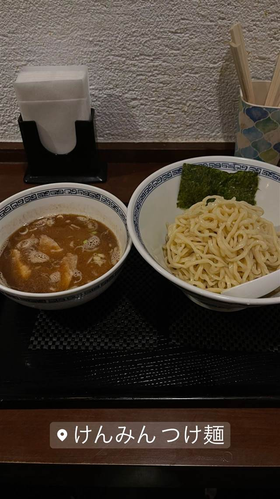

つけめん処 けんみん
新宿の老舗で17年修行した店主の魚介豚骨つけ麺
けんみん つけ麺
店主が新宿の老舗「昌平ラーメン」で17年間修行した後、2008年7月に不動前で独立開業したつけ麺店。魚介豚骨のあっさりつけ汁と手打ち太麺の相性が評判で、担々麺風のつけ麺も人気。
TRIVIA
へえ、という話
- 店舗は元は寿司屋で、居抜きのため店内が縦長という珍しい造り
- 店主は新宿の老舗『昌平ラーメン』で17年間修行してから独立
REVIEWS
みんなの声
89.954ラーメンDB3.22食べログ
「担々麺風つけ麺とラー油の香り」に注目
- 担々麺風の辛いつけ麺に使われる自家製ラー油の香りが評価されている
- 辛いつけ麺と銘打っていても辛さは控えめで食べやすいという声が多い
- のんびりとした店内の落ち着いた雰囲気の良さを挙げる人も少なくない
ラーメンデータベース 口コミ25件・最新 2026-02
| 創業 | 2008年7月（平成20年）創業 |
|---|---|
| 系譜 | 新宿の老舗「昌平ラーメン」で17年間修行後に独立 |
| 看板 | 手打ち太麺のつけ麺（魚介豚骨あっさりスープ） |
| こだわり | 魚介と豚骨ベースのあっさりつけ汁が手打ちの太麺によく絡む。担々麺風の辛味つけ麺も人気 |
| どこから | 都心 |
| 予算 | 昼 ～¥999 夜 ～¥999 |
| 定休日 | 日曜日 |
| 予約 | 予約不可 |
| 場所 | 不動前駅 東京都品川区西五反田5-12-3 |
| 注意 | 不動前駅すぐ。店舗は元寿司屋の居抜きで、縦長の個性的なレイアウト |
食べたもの：つけ麺